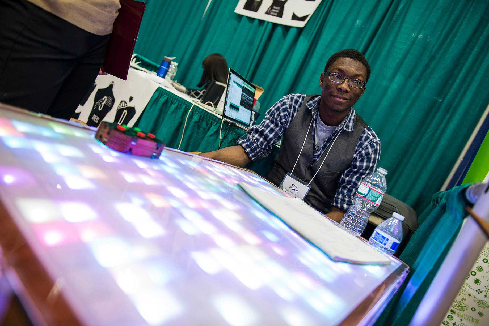
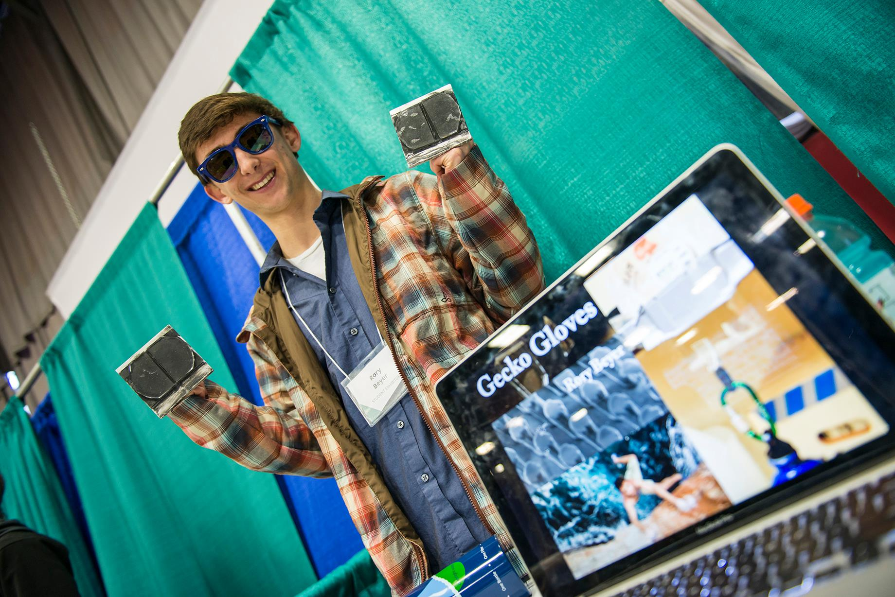
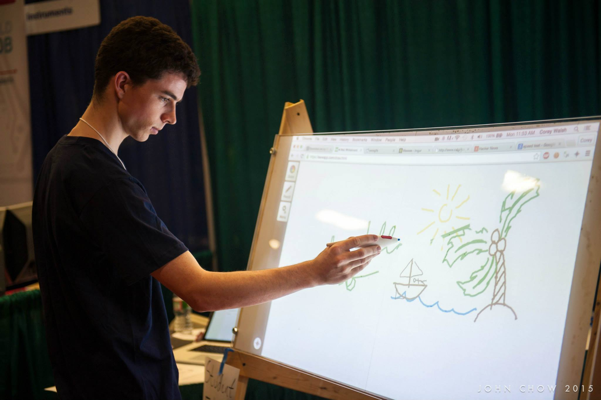

We want to see your creativity, innovation, and engineering at its best. And we want to help you gain the exposure you deserve. Every year, the ProjX committee sponsors over 50 student projects with up to $500 in funding. These students will display their projects at xFair 2016 to thousands of students and hundreds of industry professionals. Applications open every October – stay updated on the
ProjX website.

LED Matrix Coffee Table
David Afolabi
With the help of an Arduino and nearly 400 LEDs, an ordinary coffee table becomes an entertainment piece and an interactive experience. It uses a 15x25 pixel display embedded in the tabletop to show patterns and images and even play games.

Gecko Gloves
Rory Beyer
Gecko Gloves are a pair of gloves and shoes that a person can wear in order to allow them to climb up any type of surface, from glass skyscrapers to granite cliffs, just like a gecko can. Because of the microstructure of the material, the gloves adhere very strongly to a surface when there is a weight.

Projected Browser
Corey Walsh
This Chrome plugin lets you turn a projected browser window into a touch interface with minimal setup or hardware requirements.